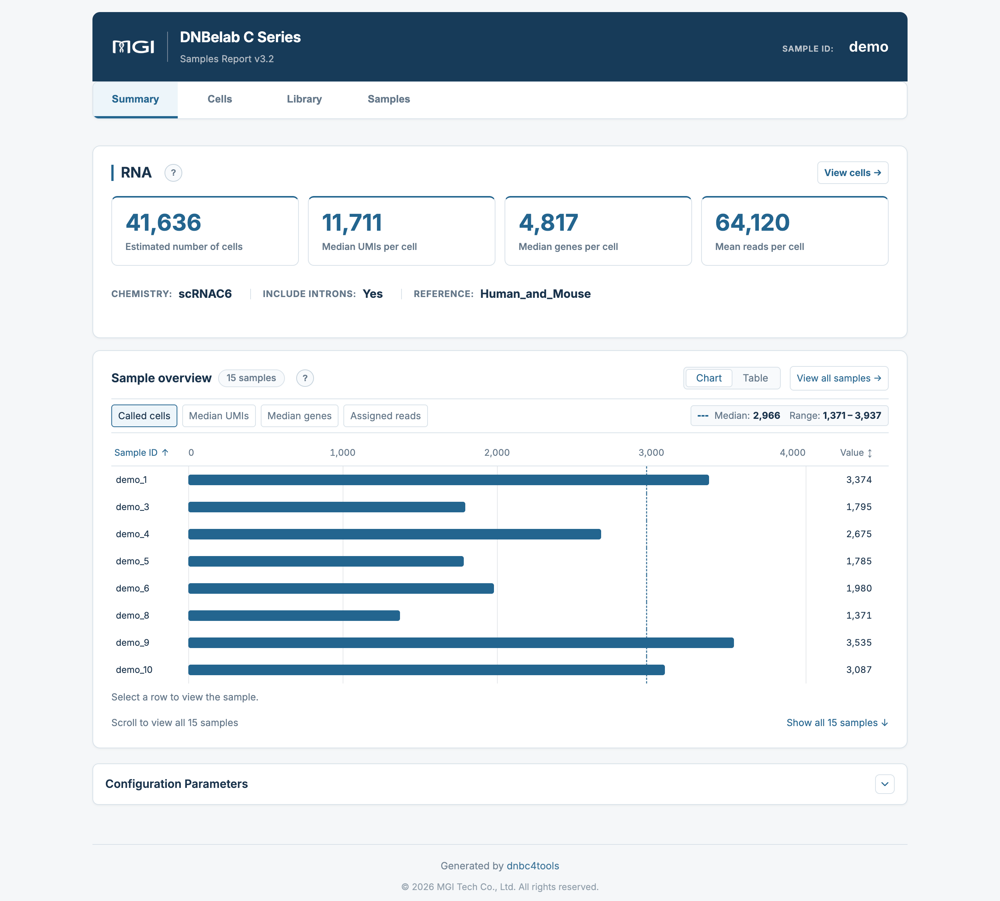
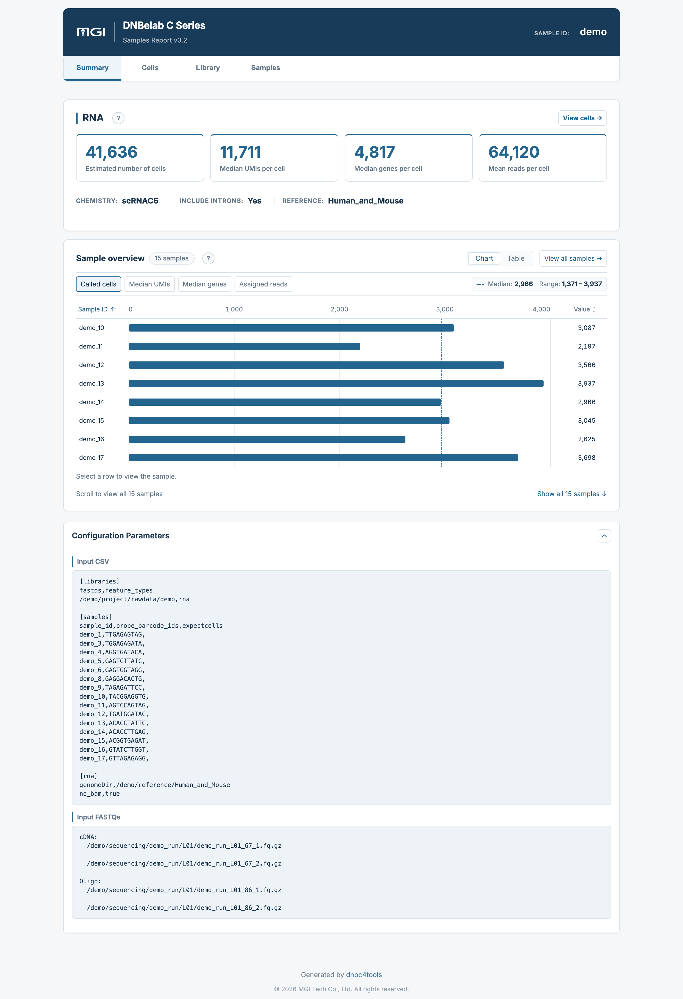
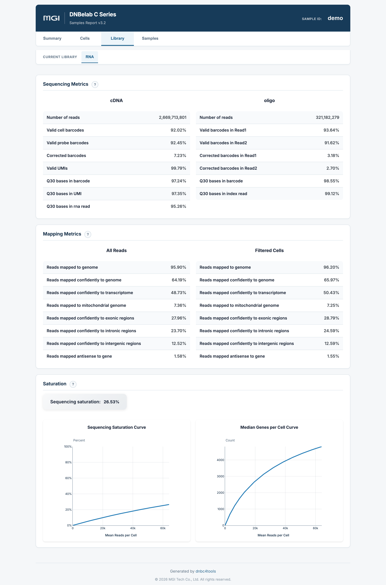

C6 Multi-Sample Analysis Output Guide ¶
Output scope: Directory trees describe a typical completed run. Optional outputs depend on enabled modules and successful stages. Quality ranges below are interpretation guidance, not software pass/fail rules; use the configured thresholds and report status for this run.
C6 multi-sample RNA outputs are organized into pooled results and per-sample results. Pooled results support comparisons of sample QC metrics; per-sample results contain expression matrices, clustering results, and reports. See Downstream Analysis for loading examples.
Deliverables at a Glance ¶
The table below summarizes the key deliverables of C6 multi-sample single-cell RNA analysis, file formats, primary use cases, and recommended downstream ecosystem integrations:
| File | Format | Purpose |
|---|---|---|
<name>_multi_report.html |
HTML | Batch summary and sample comparisons |
filtered_feature_bc_matrix.* |
MEX / H5 / H5AD | Pooled called-cell counts |
raw_feature_bc_matrix.* |
MEX / H5 | Unfiltered counts |
singlecell.csv.gz |
CSV.GZ | Bead/droplet metadata and cell calls |
multi_sample/ |
CSV / TSV / JSON | Sample assignment and QC metrics |
per_sample_outs/<sample>/ |
Directory | Per-sample matrices, analysis, and reports |
metrics_summary.xls |
TSV | Global QC summary |
oligo.records.bam, unassigned_alignments.bam |
BAM | Shared oligo and unassigned alignments |
File names above are relative to outs/rna/, except the batch report, which is under outs/. Exact paths appear in the directory tree below.
MEX matrices are directories; H5 and H5AD matrices are sibling files. Pooled counts do not include joint dimensionality reduction or clustering. Filter singlecell.csv.gz with is_cell_barcode == 1 for called cells; read large tables in chunks. BAM files and their indexes are generated only when [rna] no_bam is false (the default). The summary and per-sample HTML reports can be opened locally in a desktop browser. See detailed files and report interpretation below for fields, loading guidance, and report tabs.
The pooled and per-sample filtered_feature_bc_matrix.h5ad files contain raw counts before downstream analysis. Load each sample's analysis/QC_Cluster.h5ad for saved clustering/embeddings. Samples that are empty or fail under sample_failure_policy=skip may lack analysis files or HTML reports; inspect report status and logs/run_manifest.json instead of treating the directory tree as a mandatory bundle.
Output Directory Structure ¶
Upon completion, results are archived under <outdir>/<name>/outs/. BAM files and their indexes in the tree below are generated only when [rna] no_bam is false (the default); no_bam,true skips all BAM outputs:
<outdir>/<name>/
├── outs/
│ ├── <name>_multi_report.html # Batch multi-sample summary report (4 interactive tabs)
│ └── rna/
│ ├── raw_feature_bc_matrix/ # Global unfiltered expression matrix (MEX format)
│ ├── raw_feature_bc_matrix.h5 # Global unfiltered expression matrix (HDF5 format)
│ ├── filtered_feature_bc_matrix/ # Global real-cell expression matrix (MEX format)
│ ├── filtered_feature_bc_matrix.h5 # Global real-cell expression matrix (HDF5 format)
│ ├── filtered_feature_bc_matrix.h5ad # Global real-cell expression matrix (AnnData format, no joint clustering)
│ ├── singlecell.csv.gz # Global droplet metadata table (with is_cell_barcode flag)
│ ├── metrics_summary.xls # Global analysis metrics summary (tab-delimited TSV)
│ ├── oligo.records.bam # Shared Oligo alignment records (output when BAM enabled)
│ ├── unassigned_alignments.bam # Alignments for unassigned reads (output when BAM enabled)
│ ├── multi_sample/ # Sample demultiplexing and QC metrics
│ │ ├── per_sample_metrics.csv # Cross-sample comparative metrics table
│ │ ├── sample_metrics_summary.xls # Sample-level QC summary table
│ │ ├── barcode_assignment_metrics.json # Sample barcode identification and splitting statistics
│ │ └── high_occupancy_metrics.json # High-occupancy droplet filtering statistics
│ └── per_sample_outs/<sample>/ # 【Per-Sample Output Directory】
│ ├── raw_feature_bc_matrix/ # Sample-specific unfiltered expression matrix (MEX)
│ ├── raw_feature_bc_matrix.h5 # Sample-specific unfiltered expression matrix (H5)
│ ├── filtered_feature_bc_matrix/ # Sample-specific real-cell expression matrix (MEX)
│ ├── filtered_feature_bc_matrix.h5 # Sample-specific real-cell expression matrix (H5)
│ ├── filtered_feature_bc_matrix.h5ad # Sample-specific real-cell expression matrix (AnnData format)
│ ├── <sample>_scRNA_report.html # Sample-specific interactive HTML report
│ ├── metrics_summary.xls # Sample-specific quality metrics table
│ ├── <sample>_alignments.bam # Sample-specific BAM (when enabled; with .bai / .csi)
│ └── analysis/ # Sample-specific clustering and marker gene analysis
│ ├── cluster.csv # Cell clustering assignments & UMAP 2D coordinates
│ ├── marker.csv # Long-format cluster marker gene differential analysis
│ ├── marker_table.csv # Wide-format cluster marker summary table
│ ├── QC_Cluster.h5ad # Complete AnnData object with clustering and embeddings
│ ├── raw_qc.xls # Per-cell raw quality metrics table (TSV text)
│ ├── raw_QCplot.png # Pre-filtering single-cell QC violin plot
│ ├── filter_QCplot.png # Post-filtering single-cell QC violin plot
│ ├── cluster_annotation.png # Cell type annotation scatter plot (when reference configured)
│ └── cell_classification.csv # Species classification & multiplet calls (mixed-species only)
└── logs/
└── run_manifest.json # Pipeline step status and runtime audit manifest
Detailed File Description ¶
1. Multi-Sample Summary Report ¶
Path: outs/<name>_multi_report.html.
* Role: Central quality control dashboard and overview for the entire C6 multiplexed experiment.
* Four Core Interactive Tabs:
* Summary: Batch-level summary cards (cells, median UMIs/genes), chemistry and runtime configuration, cross-sample bar chart/table comparisons, and expanded parameter manifests;
* Cells: Sample-level RNA QC table, single-cell violin distributions, overlaid barcode rank curves, bead merging distributions, and probe barcode demultiplexing statistics;
* Library: Shared cDNA and Oligo library sequencing fidelity (Q30, valid barcodes/UMIs), mapping breakdowns for All Reads vs. Filtered Cells, and saturation curves;
* Samples: Decoupled support for all-sample comparative QC summaries (All samples mode) as well as per-sample details (Single sample mode, featuring sample-specific UMAP clustering, UMI overlays, cell type annotation, and cluster marker tables).
* For detailed metric and chart interpretations, refer to Multi-Sample Web Report Interpretation below.
2. Globally Merged Expression Matrix ¶
Path: filtered_feature_bc_matrix.*.
* Role: Pooled high-confidence count matrix for real cells across all multiplexed samples, provided in MEX, H5, and H5AD formats.
* Feature & Design Rationale: Preserves raw counts without joint dimensionality reduction or clustering across samples. For joint analysis, assess batch effects in the context of the experimental design and select an appropriate integration method.
* Namespace Protection: Cells in different samples may carry identical bead barcodes. Distinction relies strictly on sample barcode tags. When performing cross-sample pooling, do not truncate barcode suffixes; we recommend prefixing sample IDs during import into Seurat / Scanpy (e.g., add.cell.ids = c("SampleA", "SampleB")).
3. Global Droplet Metadata ¶
Path: singlecell.csv.gz.
Compressed in streaming gzip format, recording metrics across all beads and droplets (including ambient noise).
| Column | Description |
|---|---|
cell |
Aggregated cell identifier (may be blank for unassigned background droplets) |
reads |
Number of transcriptomic reads associated with this bead/droplet |
gene |
Number of distinct genes detected (UMI ≥ 1) |
umi |
Total number of transcript molecules (UMIs) detected |
is_cell_barcode |
Real cell call flag (1 or True indicates high-confidence real cell; 0 or False indicates background; unmatched records may be blank) |
barcode |
Raw cell barcode sequence (retaining sample tag suffix) |
Downstream Usage Tips
- Filter Real Cells: When reading this table into R or Python, always filter rows where
is_cell_barcode == 1; do not treat all rows as cells. - Streaming Large Tables: With millions of candidate droplets, reading into Python should use chunking (
pd.read_csv(..., chunksize=100_000)) or Polars for high performance.
4. Per-Sample Output Directories ¶
Path: per_sample_outs/<sample>/.
Each sample output directory contains the files below. Optional files are generated under the conditions described for each file:
- Sample HTML Report (
<sample>_scRNA_report.html): Sample-specific Barcode Rank Plot, UMAP cell clusters, marker gene heatmaps, and sequencing saturation curves; - Sample Matrices: Independent MEX directory, H5 format, and AnnData
filtered_feature_bc_matrix.h5ad; - Sample BAM File (
<sample>_alignments.bam): Generated only when[rna] no_bamisfalse; contains only reads assigned to this sample (with.baior.csiindex) for locus inspection in IGV; - Sample Analysis Directory (
analysis/):dnbc4toolsindependent graph clustering, differential marker analysis, and QC figures.
marker.csv uses the same positive-marker selection as ordinary RNA: adjusted P < 0.05, positive log fold change, and at most 50 genes per cluster. cluster{K}_pval in marker_table.csv stores an adjusted P-value despite its shorter column name. Optional gene_symbols is present only if available in the source metadata.
Per-Sample Analysis Directory Detail ¶
Path: per_sample_outs/<sample>/analysis/.
| File Name | Format | Primary Purpose & Field Description |
|---|---|---|
cluster.csv |
CSV |
Single-cell cluster assignments and coordinates. Records cell barcodes (row index), nGene, nUMI, leiden (cluster ID), UMAP_1, UMAP_2 coordinates, Cluster (with cell count label), and optional Predict_number and Predicted cell type. |
marker.csv |
CSV |
Long-format differential marker gene table for cell type identification and functional enrichment. Includes cluster, gene, score, avg_log2FC, p_val, p_val_adj, pct.1 (in-cluster fraction), and pct.2 (out-of-cluster fraction). |
marker_table.csv |
CSV |
Wide-format marker table suitable for cross-cluster comparison. Includes gene_ids, gene_name, and corresponding cluster{K}_lg2fc and cluster{K}_pval for each cluster. |
QC_Cluster.h5ad |
H5AD |
Full AnnData object encompassing downstream filtering, normalization, highly variable genes, PCA, Leiden graph clustering, UMAP coordinates, rank_genes_groups marker statistics, and cell annotations. Use Scanpy to read the saved clustering assignments, embeddings, and marker statistics. |
raw_qc.xls |
TSV Text |
Per-cell quality metrics table (note: tab-delimited plain text TSV, not a binary Excel spreadsheet). Rows represent cell barcodes; columns include n_genes_by_counts, total_counts, and mitochondrial percentages. |
raw_QCplot.png |
PNG |
Pre-filtering violin distribution of cellular features (UMI counts, gene counts, and mitochondrial percentages). |
filter_QCplot.png |
PNG |
Post-filtering violin distribution displaying the effect of QC cutoff filtering. |
cluster_annotation.png |
PNG |
(Optional) Generated when reference annotations (HCL for human, MCA for mouse) are enabled, displaying the UMAP scatter plot projected with predicted cell types. |
cell_classification.csv |
CSV |
(Optional) Generated in mixed-species experiments (e.g. Human_and_Mouse), recording species calls and multiplet calls for each cell in this sample. |
Global Analysis Directory Scope
- Single-Species C6 Runs: The global output does not include an
outs/rna/analysis/directory; independent clustering outputs are located exclusively in each sample'sper_sample_outs/<sample>/analysis/. - Mixed-Species Runs: The global
outs/rna/analysis/delivers only the globalcell_classification.csvspecies assignment table. - Count Matrix H5AD Location:
filtered_feature_bc_matrix.h5ad, serving as the count matrix deliverable, is located in the sample rootper_sample_outs/<sample>/alongside the MEX and H5 formats.
Web Report Guide ¶
Path: outs/<name>_multi_report.html.
Overview: The HTML report provides shared library metrics, sample QC comparisons, and per-sample analysis results. Use the top modality navigation and left functional navigation to select a view.
C6 Multi-Sample Quality Assessment Principles & Review Guide
- Tiered Evaluation Strategy: C6 multiplexing combines shared library construction with sample tagging. Review should proceed in three stages: Global Library QC → Cross-Sample Uniformity → Individual Cell Biology.
- Library Metrics First: Inspect the
Librarytab first for shared cDNA and Oligo throughput, Q30 base quality, valid barcodes, and genomic mapping rates to rule out global sequencing risks. - Cross-Sample Uniformity Check: In the
SummaryandCellstabs, evaluate assigned reads, cell counts, and median genes/UMIs across samples to identify outliers caused by viability differences or tagging efficiency variations. - Individual Sample Biological Validation: In the
Samplestab or sample reports, verify UMAP cluster topology, automated cell annotations, and canonical marker gene expression for biological consistency.
Two-Level Navigation Architecture ¶
The interactive report decouples content through primary top and secondary left navigation bars:
- Top Modality Bar (Primary Tab): Displays active modality as
RNA; - Left Navigation Bar (Secondary Tabs):
Summary: Global batch overview cards, cross-sample comparative charts, and runtime configuration;Cells: Single-cell level QC metrics, violin distributions, barcode rank curves, bead merging, and probe demultiplexing;Library: Physical sequencing library metrics (Q30, valid barcodes/UMIs), mapping distributions, and sequencing saturation;Samples: Decoupled views for all-sample comparative summaries (All samples) and per-sample details (Single sample clustering and markers).
Summary & Parameters ¶
Summary Page (Assay overview) ¶
The Summary tab provides global batch statistics and cross-sample metric comparisons to rapidly spot outlier samples:

1. Global Summary Cards ¶
Prominent metric cards at the top highlight overall batch performance:
| Metric Card | Calculation & Statistical Scope | Interpretation & Guidance |
|---|---|---|
| Estimated number of cells | Total number of barcodes identified as real cells across all samples (sum of called cells before downstream QC). | Compare against total targeted cell input. If recovery is below expectations, review cell viability and microfluidic encapsulation alongside other QC metrics. |
| Median UMIs per cell | Median of per-sample median UMI counts (cross-sample median, not a pooled cell median). | Reflects the batch-wide transcript capture baseline. |
| Median genes per cell | Median of per-sample median detected genes (genes with UMI ≥ 1). | Reflects overall library complexity and transcriptome coverage. |
| Mean reads per cell | Assigned RNA read pairs / called cells in this sample, including assigned reads outside called-cell barcodes. | Measures average raw sequencing depth. Sequencing depth requirements depend on cell type, library complexity, and analysis goals. |
2. Pipeline Information & Chemistry ¶
Displays core execution parameters:
* Chemistry: Library protocol (displayed as SCRNAC6);
* Include Introns: Indicates whether intronic alignments contribute to gene expression quantification (Yes recommended, particularly for single-nuclei RNA-seq snRNA-seq);
* Reference: Reference genome and annotation build.
3. Cross-Sample Comparison (Sample overview) ¶
Provides toggles between Chart and Table views:
* Chart View: Bar charts ranking samples on the selected metric with a dashed line marking the across-sample median; supports sorting by Sample ID or Value to identify demultiplexing imbalances.
* Table View: Interactive table listing Sample ID, Assigned reads (count and percentage), Called cells, Median genes, and Median UMIs; click View cells → on any row to open details for that sample in the Samples tab.
Configuration Parameters ¶
Clicking the parameters toggle in the header expands the complete execution manifest:

- Input Configuration (Input CSV): Fully documents the run configuration table, including library blocks (
[libraries]), sample demultiplexing mappings and expected cell numbers ([samples]), and RNA alignment parameters ([rna]: reference genome path,no_bamflag, etc.); - Raw Sequencing Inputs (Input FASTQs): Records absolute physical FASTQ paths for cDNA and Oligo libraries, providing complete traceability for reproducible bioinformatics audits.
Cells: Cell QC ¶
The Cells tab focuses on single-cell level QC, comparing signal specificity and cellular uniformity across samples:

1. RNA Quality Metrics Table ¶
Comprehensive per-sample single-cell QC table:
| Metric | Calculation & Definition | Interpretation & Guidance |
|---|---|---|
| Estimated number of cells | Number of called real cells in this sample before downstream QC. | Evaluates whether sample-specific cell recovery meets expectations. |
| Mean reads per cell | Assigned RNA read pairs / called cells in this sample, including assigned reads outside called-cell barcodes. | Measures raw physical sequencing depth allocated per cell. |
| Mean cell-associated reads per cell | cDNA reads associated with called-cell barcodes / Total called cells. | Measures effective sequencing depth within real cells (excluding ambient loss). |
| Mean UMI counts per cell | Mean UMI counts detected per called cell. | Measures average transcript capture levels. |
| Median UMI counts per cell | Median deduplicated UMI counts per called cell. | Physical molecular capture baseline per cell. |
| Mean genes per cell | Mean genes detected (UMI ≥ 1) per called cell. | Evaluates average transcriptional richness. |
| Median genes per cell | Median genes detected (UMI ≥ 1) per called cell. | Measures cell transcriptional activity and library diversity. |
| Total genes detected | Total distinct genes detected in at least one cell in this sample. | Typically 15,000–35,000 for mammalian tissues. |
| Fraction reads in cells | Fraction of confidently mapped transcriptomic reads with valid barcodes that fall within called cells. | Assesses the fraction of reads in called cells. For low values, review cell viability, barcode assignment, and other QC metrics when investigating ambient RNA or cell damage. |
2. Barcode Ranking & Bead Merging (RNA Beads to Cells) ¶
- RNA Barcode Rank Plot (Left): Overlays barcode rank curves for all samples on logarithmic axes. High-quality samples show a wide plateau followed by a steep drop-off at the inflection point.
- RNA Violin Plot (Middle): Mitochondrial percentage violin distribution (Mito percent), monitoring cellular integrity during sample preparation and microfluidic encapsulation (typically recommended median < 10%–15%).
- Bead Count Distribution (Right): Histogram showing the number of bead barcodes merged into each called cell barcode, confirming that the vast majority of droplets encapsulate a single bead.
3. Probe Barcode Demultiplexing Table (Metrics per probe barcode) ¶
Documents the demultiplexing efficiency and yield for each Sample Barcode probe:
* Probe barcode ID: Probe barcode identifier (e.g., BC09, BC11, BC12);
* Sample ID: Bound sample identifier (e.g., demo_1, demo_3);
* UMIs per probe barcode: Total UMI counts assigned to this probe and percentage share of the run;
* Cells per probe barcode: Total called cells assigned to this probe and percentage share of the batch.
Library: Library QC ¶
The Library tab details physical sequencing fidelity for shared cDNA and Oligo libraries, genome mapping distributions, and sequencing saturation:

1. Sequencing Metrics ¶
Reports quality separately for the transcriptomic cDNA library and sample tagging Oligo library:
| Library Type | Core Metrics | Interpretation & Guidance |
|---|---|---|
| cDNA Library | • Number of reads: Total input raw reads• Valid cell barcodes: Barcode whitelist matching fraction (≥ 80%)• Valid probe barcodes: Probe barcode validity (if applicable)• Corrected barcodes: 1bp error-corrected barcodes (5%–10%)• Valid UMIs: Valid non-N, non-homopolymer UMI fraction (> 99%)• Q30 bases in barcode / UMI / RNA read: Phred quality scores (> 85%) |
Evaluates sequencing instrument performance and cDNA library integrity. |
| Oligo Library | • Number of reads: Total Oligo reads• Valid barcodes in Read1 / Read2: Barcode match rate in paired reads (≥ 85%)• Corrected barcodes in Read1 / Read2: 1bp correction rate• Q30 bases in barcode / index read: Base quality for sample tags |
Evaluates sample tagging fidelity, directly determining demultiplexing accuracy. |
2. Mapping Metrics ¶
Provides views for All Reads (entire library) and Filtered Cells (real-cell reads):
* Reads mapped to genome: Fraction of reads aligning to the reference genome (recommended ≥ 85%–90%);
* Reads mapped confidently to genome: Uniquely aligned high-confidence fraction (recommended ≥ 65%–80%);
* Reads mapped confidently to transcriptome: Fraction aligning confidently to annotated transcripts (recommended ≥ 50%);
* Reads mapped to mitochondrial genome: Percentage assigned to mitochondrial genes;
* Confidently mapped to Exonic / Intronic / Intergenic: Alignment distribution across genomic feature classes (when Include Introns is enabled, both exonic and intronic reads contribute to UMI quantification);
* Mapped antisense to gene: Fraction aligning antisense to annotated transcripts.
3. Saturation Analysis ¶
- Sequencing Saturation Curve: Plots sequencing saturation as a function of mean cDNA reads per cell estimated via downsampling. Saturation levels around 50%–70% generally satisfy standard clustering and cell type identification needs.
- Median Genes per Cell Curve: Illustrates gene discovery plateauing with sequencing depth, identifying points of diminishing returns.
Samples: Sample Results ¶
The C6 report in version 3.2 provides two views in the Samples tab: an all-sample overview and individual sample details:
1. All-Sample Overview (All samples View) ¶
When All samples (15) is selected from the dropdown menu, comprehensive comparative tables and curve previews are displayed across all multiplexed samples:

- Cell Calling Quality Table: Horizontally compares
Cells,Fraction reads in cells,Median Genes per Cell,Median UMI Counts per Cell,Mitochondrial %,Total Genes Detected,Assigned Reads, andMean Reads per Cellacross all samples; - Mapping Quality - All Reads Table: Horizontally compares genomic mapping rate, confident genomic rate, transcriptomic rate, exonic/intronic/intergenic breakdown, and antisense rate;
- Cross-Sample Curve Previews: Barcode rank curves, violin plots, and saturation curves overlaid across all samples.
2. Sample Details (Single sample View) ¶
Selecting an individual sample from the dropdown (e.g., demo_17) reveals its independent biological clustering and marker expression:

Sample-Specific Quick QC Cards (Cell Calling & Mapping Quality) ¶
Selecting a sample immediately updates two key metric card sets: * Cell Calling Quality: Cells, Fraction reads in cells, Median Genes/UMIs, and Assigned Reads for this sample; * Mapping Quality — All Reads: Genomic mapping rate, transcriptomic rate, mitochondrial ratio, and exonic/intronic proportions.
Independent Barcode Rank & Violin Plots ¶
- Displays the independent Barcode Rank curve and inflection point for this sample;
- Displays independent single-cell violin plots for Genes, UMIs, and mitochondrial percentage.
Independent UMAP Clustering & UMI Overlay ¶
- Left Plot (RNA Cluster Assignment): 2D UMAP projection colored by unsupervised graph-based clusters (subsampled up to 10,000 cells for browser responsiveness; full cell sets are retained in output files);
- Right Plot (UMI Count Overlay): UMAP colored by total UMI counts per cell, confirming whether clusters are driven by biological expression or sequencing depth variations.
Automated Cell Annotation ¶
When supported reference annotations are enabled, predicted cell identities (such as B cells, T cells, NK cells, Monocytes) are projected onto the UMAP scatter plot.
Differential Marker Gene Analysis (Top Features by Cluster) ¶
Interactive marker gene table comparing each cluster against remaining cells:
* Cluster: Cluster number;
* Gene: Marker gene symbol;
* p_val_adj: Adjusted p-value returned by Scanpy rank_genes_groups;
* avg_log2FC: Log2 fold change of gene expression in this cluster;
* pct.1 / pct.2: Percentage of cells expressing the gene within vs. outside the cluster.
Sample Saturation Analysis ¶
Displays independent sequencing saturation and median genes per cell curves for this sample.
Core Metrics & Denominator Scope ¶
The denominators used for C6 metrics are defined below:
| Metric | Scope & Calculation Definition |
|---|---|
| Assigned Reads | Actual read pairs assigned to this sample based on Sample Barcode recognition (not total raw reads). |
| Mean Reads per Cell | Assigned Reads / Cells within the sample (shows N/A if cell count is 0). |
| Mean cell-associated reads per cell | cDNA reads associated with called-cell barcodes / Total called cells, representing effective sequencing depth within real cells. |
| Fraction Reads in Cells | Confidently mapped transcriptomic reads from called cells divided by total valid-barcode reads in this sample. |
| Mapping Quality | Calculated using evaluated reads assigned to this sample; does not pool cross-sample reads. |
| cDNA Valid Barcodes | Stably reported as 100% when Assigned Reads > 0 (describes the subset already assigned). |
| Library-Level Metrics (Q30 / Valid UMI) | Measures shared sequencing quality; annotated as cDNA QC scope. |
| Sample Barcode Validity | Fraction of Oligo reads matching the expected sample barcode whitelist. |